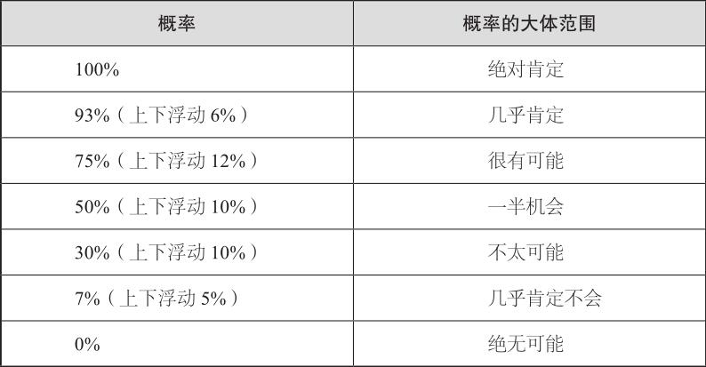
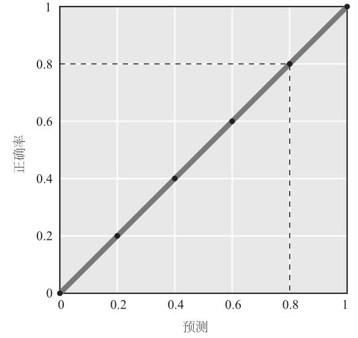
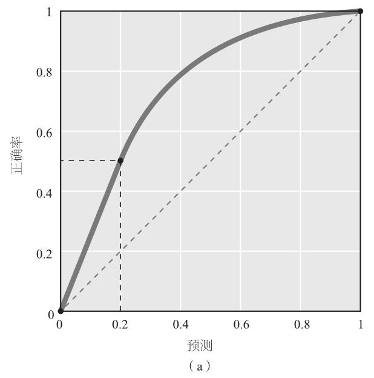
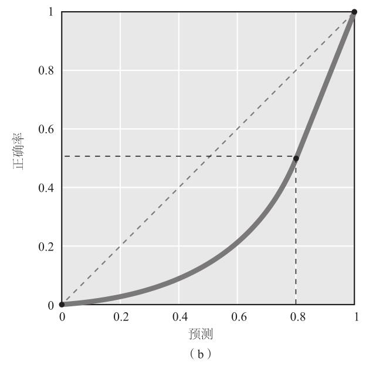
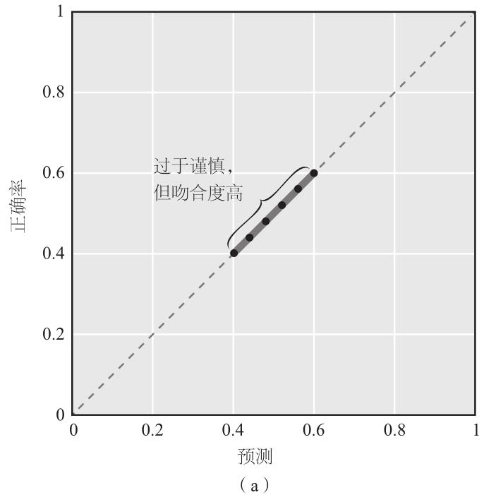
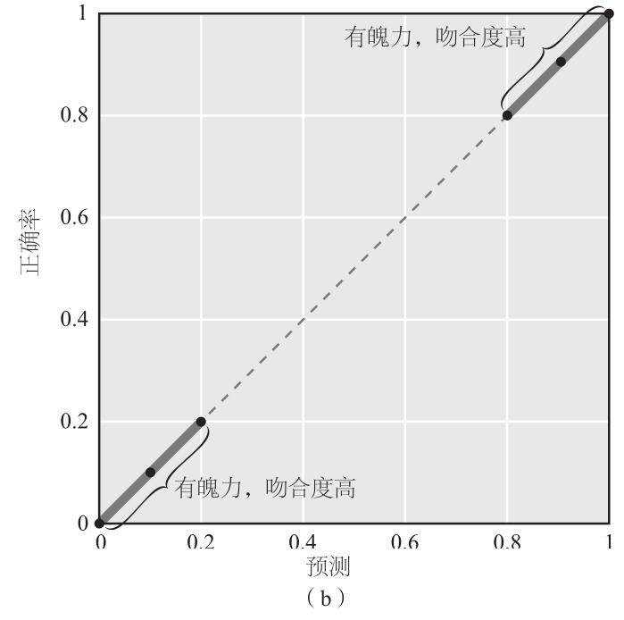

上面说的这个例子让我开始反思专家的预测。1988年某日的午餐时间，后来在伯克利分校成为我同事的丹尼尔•卡尼曼抛出了一个可验证的想法，事后证明他的想法具有先见之明。他猜想，智力和知识会提高预测水平，但由此造成的差距会迅速缩小。拥有博士学位或数十年经验的人的预测准确性可能仅仅略高于《纽约时报》的热心读者。当然，那时卡尼曼只是这样猜想，不过，现在他的这一猜想仍然还是猜想。没有人认真验证过政治问题专家预测的准确性。我不断地思考这个现象，越来越清楚无人接受这项挑战的原因。
考虑一下时间表的问题。显然，没有时间表的预测是荒唐可笑的。但是，预测者通常不会提及时间表，例如他们写给本•伯南克的信就是这样。他们并非不诚实，至少不会经常使诈。确切地说，他们脑海中有一份时间表，大众对这份时间表产生了共同的带有暗示意味的但又粗糙的理解，预测者利用的就是这种效果。这就是没有时间表的预测看起来也不会荒唐可笑的原因。可是，随着时间流逝，记忆渐渐褪去，曾经看似显而易见的得到默认的时间表如今不再那么清晰，其结果经常是一场关于预测的“真正”含义的无聊争论。这件事预计今年还是明年发生？这个10年还是未来10年？没有时间框架，就没有办法解决这些争议，让大家都满意，尤其是当争吵发生在网上时。
仅仅这个问题就造成了日常生活中许多预测无法验证。与之类似的是，预测经常利用受众对关键词的暗示性理解而不是明确的说明，例如史蒂夫•鲍尔默的预测中的“可观的市场份额”。这种语意含糊的措辞是常态，而不是特例。它也是预测不可验证的原因之一。
还有一些更小的因素阻碍了人们对预测的判断。而概率则是一个大得多的因素。
有些预测容易判断，因为它们明确宣称某事会或者不会发生，例如乔纳森•谢尔关于核战争的预测。我们要么销毁核武器，要么“一场大毁灭……将会到来”，谢尔写道。事后证明，无论是在谢尔的书出版的那一年还是在第二年，两个超级大国都没有销毁核武库，但也没有发生核战争。所以，从字面上理解，谢尔显然预测错误。但是，如果谢尔说核战争“非常可能”发生，他错了吗？答案就不那么显而易见了。谢尔也许极度夸大了风险，或者也许完全正确，只是人类幸运地熬过了历史上最疯狂的俄罗斯轮盘赌 [1] 。确定谢尔的预测对错与否的唯一方法就是反反复复重新推演历史，如果在大多数推演中文明在重重的放射性尘埃中毁灭，我们就能知道谢尔是对的。可是我们无法推演，因此也无法知道谢尔的对错。
不过，想象一下我们是万能的生物，可以做那样的试验。我们上百次地重新推演历史，发现63%的推演以核战争结束。谢尔说对了？也许。但我们仍然不能自信地说出这一点，因为我们不知道他所说的“非常可能”到底意味着什么。
这听起来也许像诡辩。可是，正如谢尔曼•肯特（Sherman Kent）所发现的那样，它的意义要复杂得多。
在情报界，谢尔曼•肯特是个传奇人物。他拥有历史学博士学位，在耶鲁大学当过一段时间的教员，后离开耶鲁加入1941年成立的美国情报协调署的研究和分析处。情报协调署后来发展为战略情报局，后者则是中央情报局的前身。肯特于1967年从中央情报局退休，在那里他深刻地影响了美国情报机构的情报分析方法，即系统地分析由间谍和监控人员搜集的情报，弄清楚其意义，判断接下来会发生什么。
肯特工作的关键词是评估。他写道，“当你确实一筹莫展时，你要做的就是评估”。9 正如他一再强调的那样，我们绝对不会真正知道未来形势如何变化。既然如此，预测的全部功能就是评估某事发生的可能性，多年以来肯特和同事们在美国国家评估办公室的工作就是做评估。这个机构鲜为人知，但有着巨大影响力，其职责是利用中央情报局获得的一切情报，在这基础上做出预测，这些预测也许有助于美国政府的高级官员制订下一步计划。肯特和同事们的成绩绝对谈不上完美。他们最受重视的预测是发表于1962年的一份评估报告，该报告称苏联不会蠢到在古巴部署进攻性导弹，而事实上，当时苏联已经那么做了。但是，他们的评估绝大部分受到重视，因为肯特对分析的严谨性一直保持高标准。编写国家情报评估报告涉及重大利益，每一个字都不可轻视。肯特对所有文字一视同仁。可是，即便是肯特的专业素养也无法避免给人们造成困惑。
在20世纪40年代末，南斯拉夫的共产党政权与苏联决裂，人们担心苏联会入侵南斯拉夫。1951年3月，《国家情报评估》发布29~51号报告。“尽管我们不可能确定克里姆林宫会采取什么样的行动，”报告总结道，“但我们相信，（东欧）军事准备和宣传工作的规模表明，1951年对南斯拉夫的进攻应被视为大概率事件。”从大多数标准来看，这段话清晰明了，言之有物。不过，没有人透露关于南斯拉夫局势的预测何时发布，政府高层又是何时看到这个预测。几天后，肯特与国防部一位高级官员聊天，后者随口问道：“顺便问一下，你们这些人所说的‘大概率事件’是什么意思？你认为有多大可能性？”肯特回答，他感到悲观。他认为军事行动发生和不发生的概率之比为65%∶35%。这位官员大吃一惊。他和同事曾认为“大概率”要比肯特的评估小得多。10
心烦意乱的肯特回到了团队。之前他们一致同意在《国家情报评估》上使用“大概率”的措辞，肯特请每个同事回答这个措辞的含义是什么。一位分析师说它表示正反概率比约为80%∶20%，也就是说，南斯拉夫可能遭受侵略的概率是不会遭受侵略的概率的4倍。另一名分析师则认为正反概率比为20%∶80%，恰好相反。其他人的回答介于两个极端之间。肯特感到困惑。一个看起来是以大量情报分析为基础的措辞竟然含义如此模糊，以至于几乎毫无用处。也许更糟，因为它引起了危险的误解。他们的其他工作又是什么情况呢？肯特在1964年的一篇杂记中写道：“他们难道一直以来都认为，用5个月时间做评估却没有达成任何共识，这也是值得的吗？”“《国家情报评估》发布的报告难道随处可见‘大概率’或者其他对撰写人和读者而言意义可任意解读的词句吗？当我们写出这样的句子时，我们到底要表达什么？”11
肯特的担忧不无道理。1961年，中央情报局计划颠覆卡斯特罗政权，他们的方案是将一支由古巴流亡分子组成的小队伍运送至猪湾登陆，约翰•F•肯尼迪总统要求军方进行全面评估。参谋长联席会议的结论是，该计划有“一定机会”获得成功。写下“一定机会”的人后来说道，他当时想到的成功概率为25%。可是，肯尼迪从未被确切告知“一定机会”意味着什么，而他则认为这是一个非常正面的评估，他的想法也不是不合情理。当然，我们也不能肯定，如果参谋长联席会议说“我们认为这次入侵失败的概率为75%”，肯尼迪会取消这次行动。但可以肯定的是，那样的措辞会让肯尼迪在授权这次后来被证明是一场彻头彻尾的大灾难的行动时更加谨慎。12
谢尔曼•肯特提出了一个解决方案。首先，因为分析师必须对某些重大事务做出评估，但又无法合理地定出概率，所以“可能”这个词应该为这类事务专用。如果说某事“可能”发生，那么它的可能性就从接近零到接近100%。当然，这么说无助于事，因此，分析师应当尽可能缩小评估范围。为了避免造成困惑，分析师的措辞应该包含定量评估，肯特制作了一张表加以说明。13

按照此表，如果《国家情报评估》宣称某件事“很有可能”发生，意味着发生概率为63%~87%。肯特的表很简单，并且大大减少了困惑出现的机会。
但这份表格从未被采用。理论上说，人们喜欢准确明晰的语言，可是，需要做出准确明晰的预测时，他们对数字就不那么热衷了。有人说，数字让他们感觉不自然或者尴尬，的确，当他们一生都在使用模棱两可的语言时，他们会有这种感觉。可是，这只是拒绝变革的牵强借口。其他人则从美学角度表达自己的反感。他们认为，语言自有诗意，用数字来说明可能性，显得俗气，让你听起来像是赌马的人。肯特没有被这种观点折服。“我宁愿当赌马者，也强过做诗人。”这是他的经典回答。14
一直以来，还存在一种更加严肃的反对意见：用数字表示可能性评估结果，会给读者一种暗示，即这个结果反映了客观事实，而不是主观判断。这会带来危险。解决的办法不是去掉数字，而是告知读者，数字就如同文字一样，只是表示评估结果，也可以说表达观点，仅此而已。与此类似的是，人们认为，数字的精确度含蓄地说明了“预测者就是知道这个数字正确”。但是，这并非预测者的意图，所以我们还是不要妄加猜测。此外，请记住，像“大概率”这样的用词所传递的信息和数字相同，唯一真正的不同之处在于，数字含义明确，减小了造成困惑的风险。数字还有另一个好处：模糊的思想很容易用模棱两可的语言来表达，可是当预测者不得不将“大概率”这样的词汇转换成数字时，就不是那么简单了，他们必须认真思考自己的认知过程，这个过程被称为“元认知”（metacognition）。训练有素的预测者更擅长辨识更加细分的不确定性，正如画家比普通人更擅长辨别更加不易察觉的灰度。
要采用数字作为预测结果，还有一个更基本的障碍，与责任心有关，我称之为“错误划分”缺陷（wrong-side-of-maybe fallacy）。
如果一位气象学家预报说下雨的概率为70%，但最终并没有下雨，那么她的预报就错了吗？不一定。她的预报也含蓄地说明了，不下雨的概率为30%。所以，如果确实没有下雨，她的预报可能是错的，也可能完全正确。仅凭当前的这一次预报是不可能下结论的。确定对错的唯一方法是数百次重复“运行”这一天，如果在这些重复中，有70%的日子下雨，30%的日子没下雨，那么她的预报正中目标。当然，我们不是万能生物，不可能让同一天反复出现，因此也不可能判断气象学家的对错。可是人们确实会做判断，并且总是按照同样的方式进行判断：以50%作为“可能”的对应概率，预测者提出的概率在“可能”的左侧，代表“不可能”；在右侧，代表“肯定”。如果天气预报说下雨的概率为70%（右侧），而且的确下雨了，人们就认为这次预报准确；如果没有下雨，预报会被视为不准。这种简单的错误极为常见，经验丰富的思考者也在所难免。2012年，美国最高法院考虑公布民众期待已久的关于奥巴马医改法案是否违犯宪法的判决，预测市场—人们对可能出现的结果下注的市场—认定该法案被驳回的概率为75%。当最高法院判定法案不违宪时，目光敏锐的《纽约时报》记者戴维•莱昂哈特（David Leonhardt）宣称：“体现群体智慧的市场错了。”15
这种基本错误的流行带来了可怕的后果。设想一下，某情报机构声称某事件发生的概率是65%，那么，如果该事件没有发生，这家机构就可能遭到公开谴责。另一方面，因为这个预测本身还说明事件不会发生的概率是35%，这又是一个很大的风险。那么，怎样做才安全呢？答案是：坚持使用灵活的语言。说出“一定机会”和“大概率”的预测者都可以利用“错误划分”缺陷为己服务。如果该事件确实发生了，预测者可以夸大说，当初使用“一定机会”这样的措辞，指的是远远大于50%的概率，这样一来，预测者就说中了。如果事件没有发生，可以说指的是远远低于50%的概率，于是，预测者还是说中了。由于这种不正当的激励的存在，人们喜欢弹性语言胜过刚性数字，也就不足为奇了。
肯特无法克服这种政治上的阻碍，但他支持使用数字的立场却随着岁月的流逝越发坚定。越来越多的研究表明，人们使用“可能”“也许”“很有可能”这样表示概率的词汇时，所表达的意义千差万别。而情报圈依然排斥肯特的理念。只有在所谓的萨达姆•侯赛因的大规模杀伤性武器被摧毁以及随后发生的批发业改革之后，以数字表示概率的理念才被更多人所接受。中央情报局分析师告诉奥巴马总统，居住在一座巴基斯坦大院里的神秘人物有70%甚至90%的可能性就是奥萨马•本•拉登。这是已过世的谢尔曼•肯特的一个小小的胜利。在其他一些领域，数字已成为标准工具。在天气预报中，“阵雨机会不大”已让位于“30%的阵雨机会”。可是，令人失望的是，含糊不清的语言仍然如此普遍，媒体的情况尤甚，以至于我们很少意识到这样的语言有多么空洞。它就从我们的耳边溜过，丝毫没有引起我们的关注。
2012年1月，哈佛经济史学家、媒体评论员尼尔•弗格森告诉一位采访者，“我认为欧洲债务危机还没有解决，也许非常接近关键点了……希腊债务违约可能只是时间问题”。弗格森的预测准确吗？所谓“违约”，普遍的理解是对全部债务赖账，而在预测发表之后，无论是从短期、中期还是长期来看，希腊都没有这么做。但是对于“违约”，还有一种技术上的定义，在弗格森做出预测后，希腊曾经在短期内实施过。弗格森采用的是哪种定义？我们不清楚，所以，我们无法确定有任何理由认为弗格森说对了。可是，想象一下希腊没有任何类型的违约行为，我们能说弗格森错了吗？不能。他只是说希腊“可能”违约，而“可能”是个空泛的词。它指的是某事可能发生，但完全没有说明概率。几乎所有事情都有“可能”发生。我可以自信地预测地球明天可能遭到外星人攻击。如果没有发生呢？我也不算说错。每一个“可能”都要标上星号，在它身后隐藏着一行小字：“可能不会”。但是采访者没有注意到弗格森预测中隐藏的那行小字，因此没有要求他做出详细解释。16
如果我们以严肃的态度对待评估和改进，上述情况不会发生。预测应当使用语意清晰的措辞和时间框架，应当使用数字。还有一件事至关重要：我们应该有许多预测。
我们无法让历史重演，因而不能判断单个基于概率的预测准确与否。但是，当我们有许多预测时，一切都会改变。某位气象学家说明天下雨的概率是70%，我们无法对其做出判断。但是，假如她预测的是明天、后天、大后天的天气，连续几个月如此，那么，我们可以将她的预测制成图表，统计出预测记录。如果她的记录非常出色，也就是说，在她预测下雨概率为70%的那些日子里，果然有70%的日子下了雨；预测下雨概率为30%的日子里，30%的日子被说中。诸如此类。这个过程被称为“吻合度分析”，我们可以将其绘制成一张简图。下图的对角线显示了理想的吻合度分析：

如果气象学家的曲线远在对角线之上，说明她不自信：她认为某段时间下雨概率为20%，实际上很可能达到50%［见图3–2（a）］。如果她的曲线远在对角线之下，说明她太过自信：她认为概率为80%，事实上很可能只有50%［见图3–2（b）］。


这个方法非常适用于天气预测，因为每天都是新气象，预测记录可以迅速累积起来。但对于总统选举这样的事件，它的效果就没那么好了，因为要积累足够数量的预测来完成统计工作，时间跨度会长达几个世纪，而且选举不能被战争、瘟疫和其他大事件打断。这就需要我们发挥一点创造力。举例来说，我们可以关注州一级的总统选举预测，这样，每次大选我们就有55个结果。不过还是有个问题。进行吻合度计算需要大量预测，对于罕见事件而言，判断预测准确程度就不切实际。即便是对于常见事件，要做好吻合度分析工作，也意味着我们必须是耐心的数据采集者和谨慎的数据阐释者。
尽管吻合度分析工作很重要，但它还不是全部，因为当我们考虑理想的预测准确率时，想到的不是“理想的吻合度”。理想的预测是无所不知的上帝才能做到的。它说“这事会发生”，就一定会发生；说“这事不会发生”，就一定不会。用一个专业术语来说，这是“意志”（resolution）的体现。
图3–3显示了吻合度和意志如何反映准确预测的不同方面。图3–3（a）展现的是理想的吻合度和糟糕的意志。说它展现理想的吻合度，是因为当预测者认为某事发生概率为40%时，在预测期内，的确有40%的时间发生了这件事，同样，60%的概率也可做此解释。说它展现糟糕的意志，是因为预测者始终没有跳出40%~60%之间的“错误划分”区域。图3–3（b）展现的是超级吻合度和意志。之所以称之为“超级吻合度”，是因为它与前面一样，实际情况与预测概率相符，例如预测的概率为40%，实际发生率也是40%。不过，这次预测者更加决然，预测工作非常出色，确实发生的事被赋予高的概率，没有发生的事则被赋予低的概率。


综合分析吻合度和意志，我们就建立起一套计分系统，这套系统将全面反映我们对如何做一名出色的预测者的认识。有人说X事件的概率是70%，如果X事件确实发生了，则此人的分数将非常之高。但是，说X事件的概率是90%的人会拿到更高的分。再进一步，胆子大到正确预测X事件的概率为100%的人得到的分数最高。不过，骄傲自大的人一定会受到惩罚。对于那些说X事件必定发生的预测者，如果预测失败，这些人将遭受沉重打击。打击会沉重到什么程度，我们不宜下定论，但是，用赌博的思维来做预测，是明智之举。如果我说美国内战中北方佬打败南方人的可能性是80%，而且我愿意在这个问题上下注，我提供给你的是4赔1的赔率。如果你加入我的赌局，下注100元，那么，如北方军队获胜，你付给我100美元，反之我付给你400美元。但是，如果我说北方佬获胜的可能性为90%，那么，赔率提高至9倍。如果我说概率是95%，赔率又升至19倍。这个极端情况。假如你同意赌注为100美元，那么在北方佬战败的情况下，我要付给你1900美元。我们的预测评分系统应该反映出那种痛苦。
这套系统所使用的运算方法由格伦•W•布莱尔（Glenn W.Brier）于1950年创建，因此我们将评分结果称为布莱尔得分。事实上，布莱尔得分评估的是预测的内容和实际情况之间的差距。故而，布莱尔得分类似于高尔夫比赛的记分：越低越好。完美记分为0。五五开，或者随机猜测一个概率，得到的布莱尔得分为0.5。错误程度最高的预测，例如认为某事百分之百会发生，事实上却没有，这样得到的分数是极其糟糕的2.0，说明该预测与实际情况差了十万八千里。17
我们已经走完了一段长长的路。首先，我们用清晰明了的术语和时间框架来进行预测。然后，我们搜集大量包含数字的预测，运用数学来计算得分。我们在人力所及的范围内尽可能地将预测中的模糊成分挤掉。现在，新启蒙时代正在召唤我们，对吧？
注释
[1] 俄罗斯轮盘赌是一种残忍的赌博游戏。与其他使用扑克、色子等赌具的赌博不同的是，俄罗斯轮盘赌的赌具是左轮手枪和人的性命。—编者注